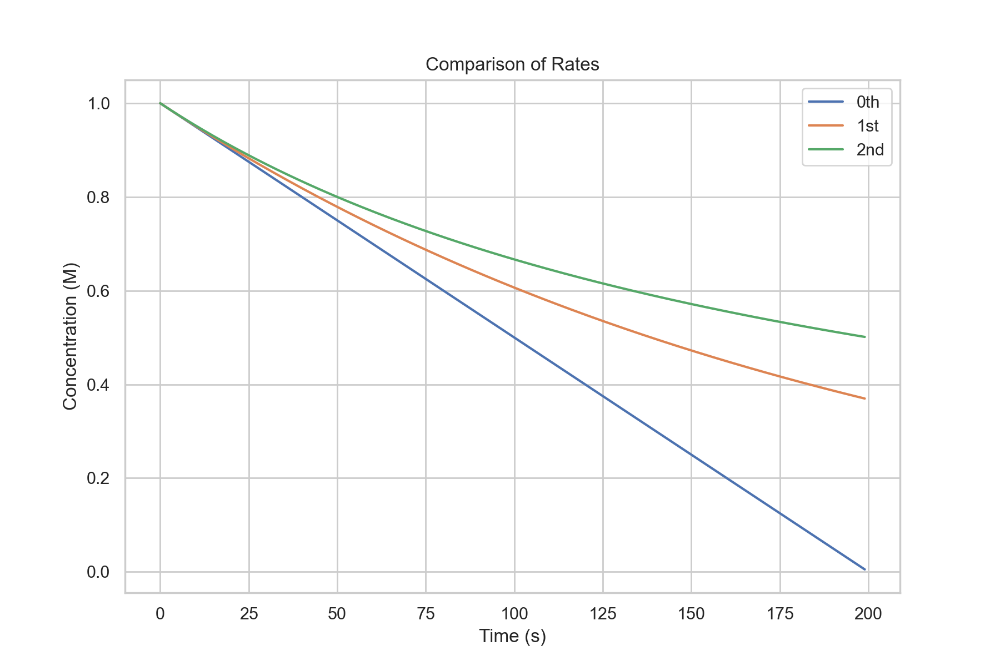
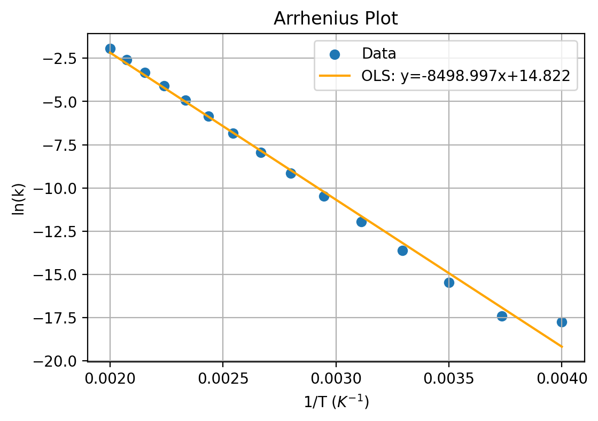
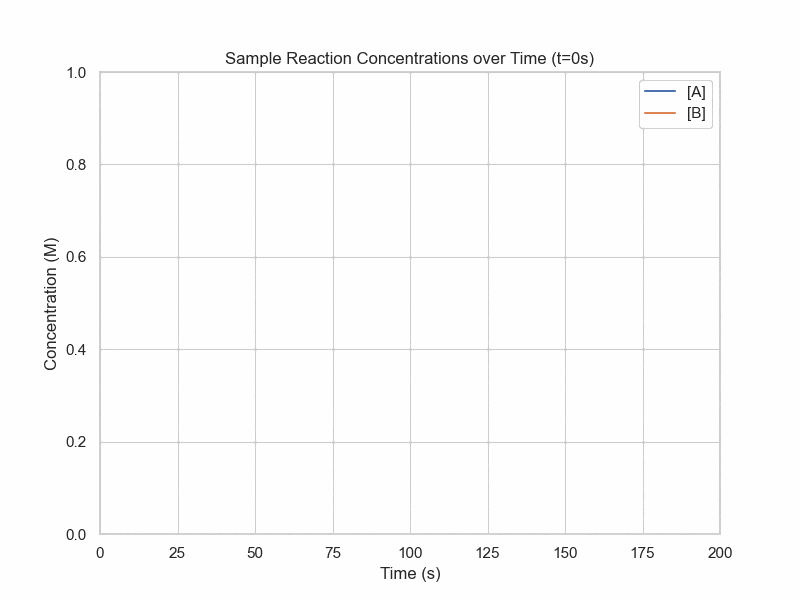
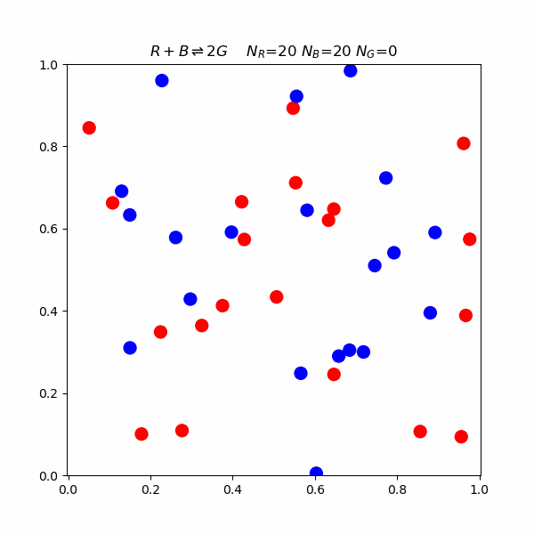
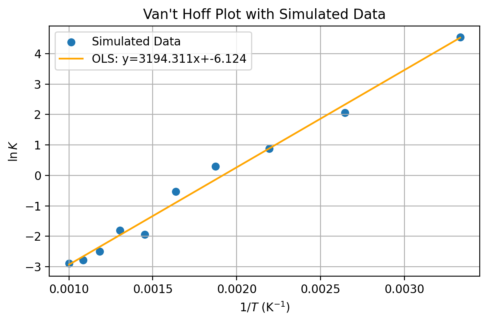

Let us consider elementary reactions - that is they have no intermediate steps:
Let A, B be the reactants and P be the product (not Phosphorus).
For single step unidirectional reactions, we can write an equation that describes the rate of change in chemical species:
$$A\rightarrow P$$
Instinctively, if this is the only reaction taking place, the concentration of A should be going down by the same rate by which the concentration of P goes up.
$$\frac{d[A]}{dt}=-\frac{d[P]}{dt}$$
It would also be intuitive to think that the higher the concentration of A, the faster the reaction would go.
Probabilitistically, a justification would be that each A molecule has a chance per unit time of converting to P.
Then if each conversion is independent, you would expect the rate of conversion to be directly proportional to the number of A.
Thus, we also get the relationship.
$$\frac{d[P]}{dt}=k[A]$$
where k is a constant of proportionality which is specific to the reaction. We will call this the rate constant.
Let us now consider a bimolecular, single-step unidirectional reaction:
$$A+B\rightarrow P$$
By similar logic, we can write the following relationships:
$$\frac{d[A]}{dt}=\frac{d[B]}{dt}=-\frac{d[P]}{dt}$$
$$\frac{d[P]}{dt}=k[A][B]$$
Integrated Rate Laws
This section will involve solving a few simple differential equations.
As thsi section is more concerned with the results and logic rather than the math, the derivations will not be especially rigorous and will be playing fast and loose with some math.
Let us consider the simplest case, a reaction that has a rate-limiting step that is independent of concentration.
$$\frac{d[P]}{dt}=k$$
If the mathematicians aren't watching, you can "multiply" by dt to get
$$d[P]=kdt$$
While not good notation, we can itegrate from time t=0 to a a generic time t=t.
$$\int_0^td[P]=\int_0^tkdt$$
$$[P]_t-[P]_0=kt$$
We would expect this as it is a constant rate process, so it should just be the rate multiplied by the amount of time.
Now for a more realistic example.
Consider a reaction with the rate law:
$$\frac{d[A]}{dt}=-k[A]$$
Again we will want each variable to be on its own side. Using some algebra and abuse of notation, we get
$$\frac{d[A]}{[A]}=-kdt$$
We can treat it as if we were integrating each side seperately.
$$\int \frac{d[A]}{[A]}=\int-kdt$$
While it may appear intimidating, we are essentially just integrating \(\frac{1}{x}\) and a constant.
$$\ln([A]_t)-\ln([A]_0)=-kt$$
In these sorts of problems, once we integrate, we then try to isolate the concentration at time t.
$$\ln([A]_t)=\ln([A]_0)-kt$$
This is the linear form for a first order reaction. If you were trying to experimentally determine k, you could do regression for this equation.
Exponentiating things, we get
$$[A]_t=[A]_0e^{-kt}$$
This is the first order integrated rate law
Now, we have an equation that describes the concentration over time, not just the rate.
For completeness, consider a rate law corresponding to a reaction with the rate law:
$$\frac{d[A]}{dt}=-k[A]^2$$
$$\frac{d[A]}{[A]^2}=-kdt$$
$$\int\frac{d[A]}{[A]^2}=\int-kdt$$
$$\frac{-1}{[A]_t}-\frac{-1}{[A]_0}=-kt$$
$$\frac{1}{[A]_t}=\frac{1}{[A]_0}+kt$$
This is the linear form for a second order reaction. If you were trying to experimentally determine k, this would be the equaiton that you would attempt to fit.
$$[A]_t=\frac{1}{\frac{1}{[A]_0}+kt}$$

Rate Law Comparison
Factors Behind Kinetics
Arrhenius Equation
$$k=A\exp(-\frac{E_a}{RT})$$
where k is the rate constant of the equation, A is the pre-exponential factor, \(E_a\) is the activation energy, R is the universal gas constant, and T is the absolute temperature.
Activation Energy
This is the minimum energy barrier that reactants must overcome to transform into products. A reaction with a high activation energy will be slower than one with a lower activation energy, all else being equal.
Temperature
A higher temperature generally increases the reaction rate by allowing more molecules to possess energy equal to or greater than the activation energy.
The activation energy, \(E_A\), is the energy barrier that reactants must overcome for a chemical reaction to occur. As the temperature increases, more molecules will possess the energy equal to or greater than
\(E_A\), leading to an increase in the reaction rate. Conversely, a decrease in temperature will result in fewer molecules with sufficient energy to overcome the energy barrier, thus slowing the reaction rate.
Arrhenius Plot
A way to determine parameters from experimental data is through an Arrhenius plot, which linearizes the equation and plots ln(k) against inverse termperature.

Arrhenius Plot Example
import numpy as np
import matplotlib.pyplot as plt
np.random.seed(0)
# Constants
R = 8.314 # Universal gas constant, J mol^-1 K^-1
Ea = 75 * 10**3 # Activation energy, J mol^-1. This is just a hypothetical value.
A = 10**7 # Pre-exponential factor, s^-1. Another hypothetical value.
# simulation params
n = 30
# Temperature range: 300K to 800K
temperatures = np.linspace(300, 800, n)
inverse_temperatures = 1 / temperatures
# Calculate rate constants based on the Arrhenius equation
k_values = A * np.exp(-Ea / (R * temperatures))
noise = np.random.normal(size=(n))*5e-6
noisy_k_values = k_values + noise
# Plot
fig, ax = plt.subplots()
ax.scatter(inverse_temperatures, np.log(noisy_k_values), label='Data')
model = sm.OLS(np.log(noisy_k_values),
sm.add_constant(inverse_temperatures))
results = model.fit()
plt.plot(inverse_temperatures,
results.predict(sm.add_constant(inverse_temperatures)),
color='orange',label=f'OLS: y={results.params[1]:.3f}x+{results.params[0]:.3f}')
ax.set_title('Arrhenius Plot')
ax.set_xlabel(r'1/T $(K^{-1})$')
ax.set_ylabel('ln(k)')
ax.grid(True)
ax.legend()
# Show the plot
plt.show()
So far, the integrated rate laws have been univariate. Differential equations with multiple variables are possible and are called "Partial Differential Equations" or PDEs.
Catalysis
A catalyst is a substance that increases the reaction rate without being consumed in the process. It achieves this by providing an alternative reaction pathway with a lower activation energy, making it easier for reactants to reach the transition state and convert into products.
Dynamic Equilibrium
Until now, we have been considering reactions that only go in one direction. In many reactions, however, products are also undergoing the reverse reaction. Eventually the concentrations of the products and reactants will no longer change. However, this does not mean that chemical reactions are not still going on.
What is actually happening is the forward reaction is happening at the same rate as the reverse reaction. This is known as dynamic equilibrium.
Let us consider a system where two elementary reactions are going on:
$$A\rightarrow^{k_1} B$$
$$B\rightarrow^{k_{-1}} A$$
As shorthand, we can combine these two lines into one:
$$A\rightleftharpoons_{k_{-1}}^{k_1} B$$
We can now introduce a more general form of writing rate laws:
Write the rate laws for all the unidirectional reactions
Write the change in concentration for a species as the sum of the simple rate laws where it is a product minus the sum of all the simple rate laws where it is a reactant
Now let's write the simple rate laws for each component:
A:
Produced
\(k_{-1}[B]\)
Consumed
\(k_1[A]\)
B:
Produced
\(k_1[A]\)
Consumed
\(k_{-1}[B]\)
Thus,
$$\frac{d[A]}{dt}=k_{-1}[B]-k_1[A]$$
$$\frac{d[B]}{dt}=k_{1}[A]-k_{-1}[B]$$
Sometimes you will hear about a "rate-limiting step" in reactions which is an approximation to simplify the equation when one reaction is much slower.
Now, due to the simplicity of the problem, there is a symmetry, but it can get much more complex. Now let's set the rate of change to be 0 to see what will happen once we reach dynamic equilibrium.
$$0=k_{-1}[B]-k_{1}[A]$$
$$\frac{[B]}{[A]}=\frac{k_1}{k_{-1}}$$
This ratio of rate constants is called the equilirbium constant, denoted with a capital K, which gives some sort of ratio of products to reactants. It should be emphasized that this "constant" does vary with temperature for a given reaction.
In a later chapter, we will look at kinetics for more complicated series of reactions.
Simulation of Dynamic Equilibrium

Dynamic Equilibrium Concentration over Time
conc_A = 1
conc_B = 0
k_1 = 3e-2
k_neg1 = 5e-3
dt = 1
conc_df = pd.DataFrame(columns=['t','A','B'])
for i in range (0,201):
conc_df.loc[i] = [i*dt,conc_A,conc_B]
dA = (k_neg1*conc_B - k_1*conc_A)*dt
dB = (-k_neg1*conc_B + k_1*conc_A)*dt
conc_A += dA
conc_B += dB
fig, ax = plt.subplots(figsize=(8,6))
ax.set_xlim(0,200)
ax.set_ylim(0,1)
lineA, = ax.plot([])
lineB, = ax.plot([])
def animate(frame_num):
lineA.set_data((conc_df.loc[:frame_num]['t'],
conc_df.loc[:frame_num]['A']))
lineB.set_data((conc_df.loc[:frame_num]['t'],
conc_df.loc[:frame_num]['B']))
plt.title(f"Sample Reaction Concentrations over Time (t={frame_num}s)")
return lineA,lineB
plt.ylabel("Concentration (M)")
plt.xlabel("Time (s)")
plt.legend(['[A]','[B]'])
anim = FuncAnimation(fig, animate,
frames=200, interval=15)
anim.save('DynamicEquilibrium.gif')
plt.show()
Kinetics Models
Collision Theory
This model proposes that for a reaction to occur, reacting molecules must collide with each other. The rate of a reaction is directly proportional to the product of the concentration of reactants and the frequency of effective collisions.
But what happens on a molecular level? The following is a simulation of a reaction involving blue, red, and green molecules.
$$R+B\rightleftharpoons 2G$$
In the simulation, there is an activation energy barrier that must be overcome. The red and blue state is lower in energy than 2 G, so the forward reaction requires higher speed collisions.

Collision Theory Molecular Simulation
Le Chatelier's Principle
Le Chatelier's Principle states that if a chemical system at equilibrium experiences a change in concentration, temperature, volume, or pressure, the equilibrium will shift to counteract the imposed change.
Concentration
Adding a Reactant: Shifts the equilibrium to the right, favoring the formation of products.
Adding a Product: Shifts the equilibrium to the left, favoring the formation of reactants.
Removing a Reactant: Shifts the equilibrium to the left, reducing the concentration of products.
Removing a Product: Shifts the equilibrium to the right, increasing the concentration of products.
Pressure
An increase in pressure shifts the equilibrium towards the side with fewer moles of gas, reducing the volume occupied by the system.
A decrease in pressure shifts the equilibrium towards the side with more moles of gas, increasing the volume occupied by the system.
Temperature
For endothermic reactions, heat is a reactant. Increasing temperature shifts the equilibrium to the right, forming more products, and decreasing temperature shifts it to the left.
For exothermic reactions, heat is a product. Increasing temperature shifts the equilibrium to the left, forming more reactants, and decreasing temperature shifts it to the right.
Equilibirium Constants
While we have previously been talking about constants in terms of concentrations, we can also parameterize it in terms of partial pressures for gaseous reactions.
For a gaseous reaction
$$aA+bB\rightleftharpoons cC+dD$$
We can write a different equilbirium constant \(K_p\) which is given by the equation
$$K_p=\frac{(P_C)^c(P_D)^d}{(P_A)^a(P_B)^b}$$
where \(K_p\) is the partial pressure equilibrium constant and \(P_i\) is the partial pressure of specie i.
Using the ideal gas law, we can derive a relationship between \(K_c\) and \(K_p\), where \(K_c\) is the normal equilibirium constant in terms of concentrations.
$$K_p=K_c(RT)^{\Delta n}$$
where R is the ideal gas constant, T is the absolute temperature, and \(\Delta n\) is the change in moles of gas from reactants to products.
Ionic Equilibrium
Strong and Weak Electrolytes
A strong electrolyte is a chemical specie that completely or near-completely dissociates into ions when dissolved in solution.
It is very rare to have a complete dissociation, but for some species, it is one-sided enough that it is a good approximation, such as with strong acids or bases.
We can then informally define a weak electrolyte as something that has a significant amount of unionized version when dissolved.
These will be species that aren't considered strong acids or bases, but still ionizes in solution, essentially.
pH
Because protons are ubiquitous in chemical reactions, we can define a useful term to help quantify the concentration outside of just stating the concentration.
The common definition of pH is
$$\text{pH}=-\log_{10}([H^+])$$
while more formally, it is defined in terms of activity
$$\text{pH}=-\log_{10}(a_{H^+})$$
For the purposes of the textbook, we will use the common definition, as activities are outside the scope of what will be covered.
We can also define pOH in a similar way by replacing the proton concentration with the hydroxide concentration, although this is less often used as it tends to be redundant since for our purposes there is the relationship pH+pOH=14.
Again, this does not strictly hold at different temperatures and when you take activity into consideration, but it is good enough for us.
Van't Hoff Equation
Introduction
The Van't Hoff equation relates the change in the equilibrium constant of a chemical reaction to the change in temperature.
Derivation
We have seen that
$$\Delta G^0=-RT\ln K$$
$$\frac{d\Delta G^0}{dT}=-\Delta S^0$$
and
$$\Delta G^- = \Delta H^0 -T\Delta S^0$$
We can plot the natural log of the equilibrium constant versus the inverse temperature.
$$\ln K = -\frac{\Delta H^0}{R}\times \frac{1}{T}+\frac{\Delta S^0}{R}$$
With two datapoints this is
$$\ln \frac{K_2}{K_1}=-\frac{\Delta H^0}{R}(\frac{1}{T_2}-\frac{1}{T_1})$$
This assumes no temperature dependence in the standard enhalpy and entropy.

Van't Hoff Plot Example
import matplotlib.pyplot as plt
import numpy as np
from scipy.stats import linregress
import statsmodels.api as sm
# Define constants
R = 8.314 # J/(mol*K), ideal gas constant
# Define hypothetical values for ΔH° and ΔS° for illustration
delta_H = -5000 # J/mol, standard enthalpy change
delta_S = 10 # J/(mol*K), standard entropy change
# Define temperature range in Kelvin
T = np.linspace(300, 1000, 10) # Reduced number of points for scatter plot
K = np.exp(-delta_H / (R * T) + delta_S / R)
# Add noise to the simulated data
np.random.seed(0) # For reproducibility
noise_level = 0.1
noisy_ln_K = np.log(K) + noise_level * np.random.randn(len(T))
# Create the Van't Hoff plot
plt.figure(figsize=(10, 6))
plt.scatter(1/T, noisy_ln_K, label='Simulated Data')
# Perform linear regression to find the best-fit line
model = sm.OLS(noisy_ln_K,
sm.add_constant(1/T))
results = model.fit()
plt.plot(1/T,
results.predict(sm.add_constant(1/T)),
color='orange',label=f'OLS: y={results.params[1]:.3f}x+{results.params[0]:.3f}')
plt.title("Van't Hoff Plot with Simulated Data")
plt.xlabel("$1/T$ (K$^{-1}$)")
plt.ylabel("$\\ln K$")
plt.legend()
plt.grid(True)
plt.tight_layout()
# Save the figure (optional)
plt.savefig("vant_hoff_plot_with_data.png")
# Display the plot
plt.show()
The Van't Hoff Equation provides a quantitative backing for the Le Chatelier's Prinicple for temperature shifting equilibrium.
For exothermic reactions (i.e. \(\Delta H^0 \lt 0\)), an increase in temperature will decrease the equilibrium constant, shifting towards the reactants.
For endothermic reactions (i.e. \(\Delta H^0 \gt 0\)), an increase in temperature will increase the equilibrium constant, shifting towards the products.
Kinetics and Equilibrium Practice Exercises
Using the collision theory, explain why increasing temperature increases the reaction rate.
Define dynamic equilibrium.
What is the equilibrium constant, K? What information does it provide about a system at equilibrium?
Write the expression for the equilibirium constant
Explain Le Chatelier's Principle
Use Le Chatelier's Principle to explain what will happen if you reduce the volume of the system
Consider the single step, second order reaction \(2A\rightarrow B\). How does the rate of a reaction change if the concentration of A is halved?
Given concentration vs. time data for a reaction, how can you use integrated rate laws to determine the order of the reaction?
State and explain the Arrhenius equation.
How does the activation energy of a reaction influence its rate, according to the Arrhenius equation?
Given the rate constants of a reaction at different temperatures, how can the activation energy be determined using the Arrhenius equation?
How is the equilibrium constant related to the concentrations of reactants and products at equilibrium?
Explain the relationship between the equilibrium constant and the rate constants for the forward and reverse reactions.
Explain the physical significance of the rate constant in the rate law.
How do the units of the rate constant vary with the order of the reaction?
If the equilibrium constant for a reaction is much greater than 1, what does it imply about the concentrations of reactants and products at equilibrium?